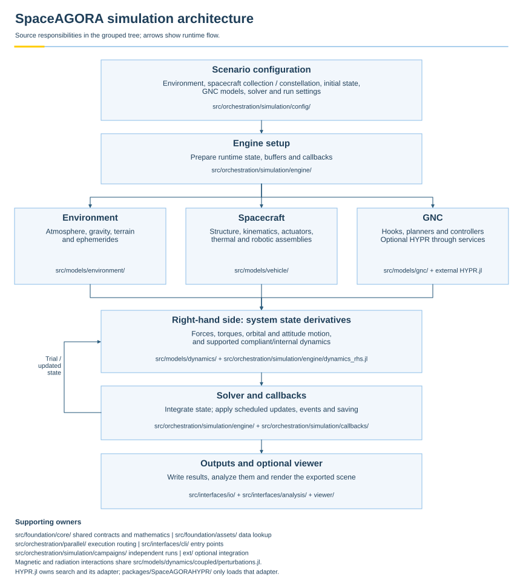

How a simulation fits together
Use this page to understand how your configuration becomes a simulation, choose a spacecraft model and identify the supported way to add behavior. Start with the Quickstart for a runnable example.
One picture of a run
A single run starts with a SimulationConfiguration handed to run_simulation. Setup prepares the state and models. During the solve, the engine repeatedly evaluates forces and torques, advances the state, and runs scheduled or event callbacks. Control forces enter the right-hand side; navigation, guidance and control-command updates use callbacks. Outputs are saved along the way and assembled into files at the end.

Download the vector architecture figure (PDF).
The arrows show runtime data flow. The integrated state explains the quantities advanced by the solver; simulation outputs explains the saved measurements and files.
Choose the parts of a run
| Part | Your choice | Guide |
|---|---|---|
| Spacecraft | Bodies, links, joints, mass properties, actuators and initial conditions | Simulation Configuration |
| Environment | Planet, atmosphere, gravity, ephemerides and other selected loads | Atmosphere Models, GRAMSuite Setup |
| Guidance and control | Configured effectors and supported optional planners | RPO Planner Pilot, HYPR Planning, EDG Guidance |
| Propagation | Time span, tolerances, integration method and stopping conditions | Solver Configuration, Stopping on a Condition |
| Execution and outputs | One run or a campaign, process workers, sampling and output files | Parallel Execution, Simulation Outputs |
The no-GRAM route is sufficient for a first run. GRAM/SPICE and optional packages require their own preparation only when your chosen models use them. See Installation and Environment.
Spacecraft assembly and constellation composition
A spacecraft contains components; a scenario contains spacecraft. SpacecraftModel holds its links, joints, root body, mass properties, actuators and initial conditions. The scenario's DynamicsModel holds the spacecraft collection and selected dynamics effectors. That collection can represent a single vehicle, a servicing pair or a constellation. It does not by itself allocate tasks or provide a communication network.
Rigid and articulated spacecraft
A Joint with joint_type :hinge, :slide or :ball makes a spacecraft articulated. Fixed links are merged, and the joint coordinates are integrated beside the root state as joint_q and joint_qd. The root is a free-floating base. By default, existing loads act on the root body and gravity is evaluated per body. With SimulationSettings(articulated_live_pose_loads=true), aerodynamics and facet SRP are evaluated per link at its live pose, and the gravity gradient becomes per body. Spacecraft without a non-fixed joint do not use this articulated path. See Joint types.
Compliant assemblies
Compliant multibody models represent flexibility with discrete bodies joined by springs and dampers. These specify masses, inertias, stiffness and damping. They support the documented articulated and compliant assemblies; they do not imply that every flexible surface or contact interaction is already coupled and validated. A mesh describes surface geometry, while a multibody model describes motion and loads.
A CompliantAttachment mounts a CompliantMultibodyModel on a spacecraft's root, fixed-merged link or moving articulated link. Its bodies are integrated beside the spacecraft and exchange forces and torques with that link in both directions. The compliant robot-arm coupling keeps a separate supported path. In that path, each arm link feels the run's position-only gravity at its own inertial position, so joint springs carry the loads that differ from the bus's free fall. See Compliant attachments and the Compliant Multibody API. The API migration note explains compatibility names. These names do not add MuJoCo contact coupling.
Several spacecraft
An arm attached to a station belongs to the station's assembly. A free-flying inspector is another spacecraft. Their task assignment and coordination belong at the mission level, above individual vehicle construction.
Use a joint simulation when spacecraft interact. The independent run_constellation_ensemble route rejects nonempty GNC effectors by default because they might couple spacecraft. Its explicit opt-in is for independently acting effectors, not a way to add cross-vehicle communication. Independent ensemble runs and coordinated constellation simulation have different contracts.
Add a model or use an optional package
For a new force, torque, atmosphere or control model, begin with the documented root API and Extensibility. The force/torque walkthrough shows a complete example. Supported hooks let your model participate in the existing runtime while preserving the units, frames and solver semantics described by each hook.
Broader optional integrations use versioned service facades:
- HYPR provides the optional planner behind
HYPRRPOPlanner; SpaceAGORA keeps the planner contract, the direct baseline and the shared path geometry, and supplies configuration, shared kinematics and dynamics through HYPR services. - External integrators, including the MuJoCo companion, use External Propagation Services with explicit state ownership and supported coupling limits.
- Experimental SpaceAGORAEDG owns guidance kernels; core retains the physical dynamics, callbacks and run lifecycle through EDG services.
- The optional visualizer consumes saved scene data. It does not change the simulation's propagation settings; see Interactive Visualization.
Optional package source checkouts do not make those packages mandatory core dependencies. Use the installation commands for the integration you need. A successful installation or interface check does not establish scientific acceptance for a particular application.
Use the Public API and compatibility reference to check whether a name is supported. Importable internal modules are not an extension contract. A checkout also contains experimental/: typed scaffolds that using SpaceAGORA does not load, with no stability guarantee.
The repository layout, the contributor checklist and the full source-owner map are kept with the repository in CONTRIBUTING.md and the contributor guide it links, outside this site.